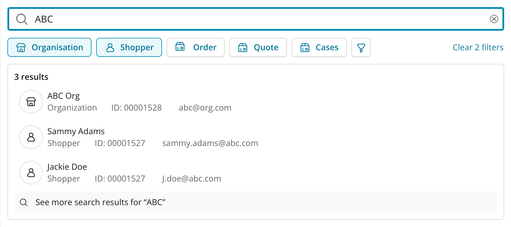
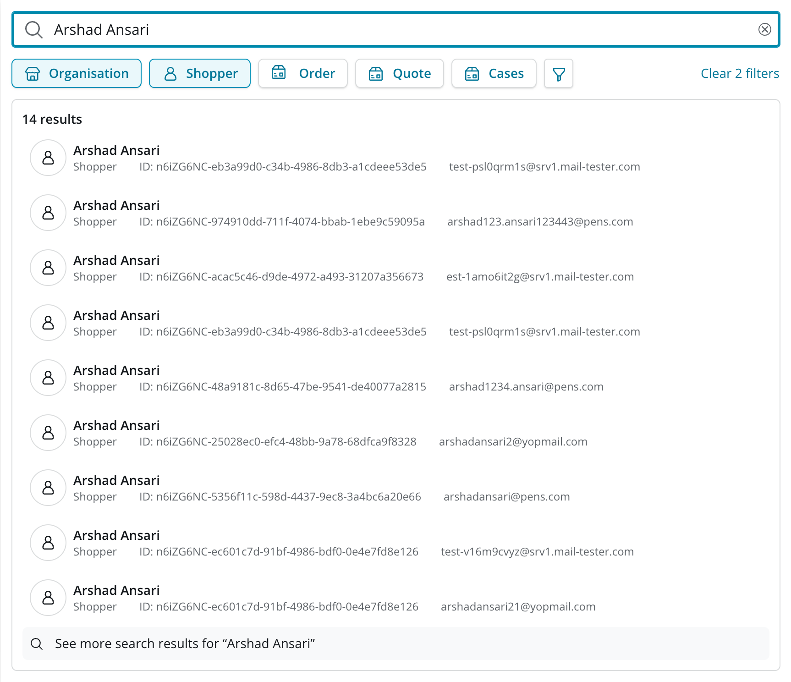
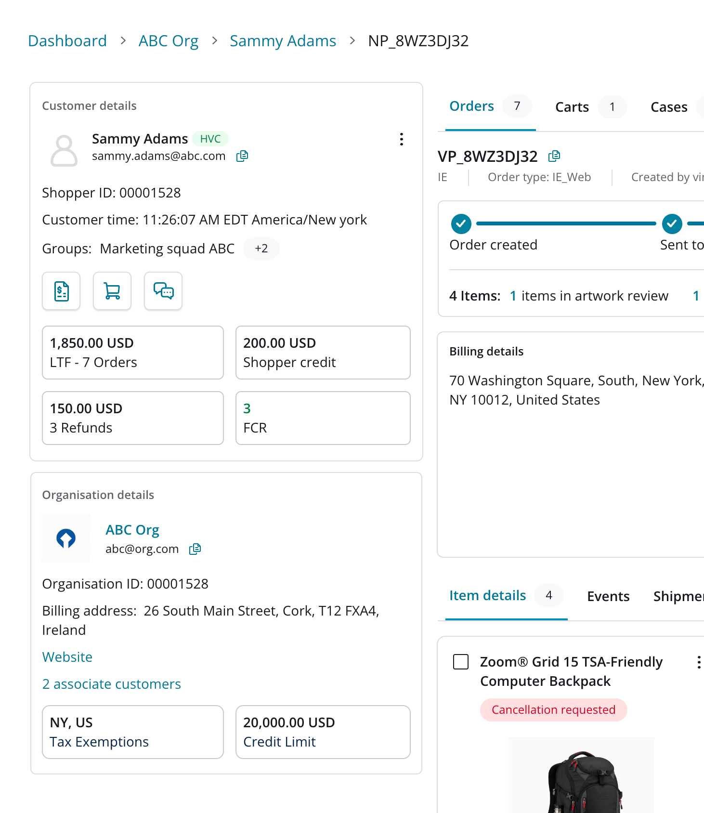

Customer 360: From Customer Lookup to Customer Intelligence
Bringing customer context into Commerce Hub delivered measurable improvements in both agent efficiency and customer satisfaction.
Before / after — Customer lookup screen (image placeholder, drop screenshots here)
Impact first
Reduction in AHT for customer lookup
Increase in CSAT for customer lookup
Less data indexed for search
Created infrastructure cost savings for the parent company.
Customer context now adopted org-wide
Appreciated across multiple businesses beyond Commerce.
The challenge
Understanding a customer meant working across two separate applications — pulling context from one system into another before an agent could act.
The bigger issue: customer wasn't a first-class entity alongside the order. It lived as secondary metadata on the Order Details page, so getting real insight meant opening customer details in a separate tab.
Search was the smaller piece — an Algolia-based experience that wasn't very targeted, indexing more than it needed to and driving up infrastructure cost.
The opportunity was to bring the customer directly into Order Details, and narrow search down to what agents actually needed.
Reframing the experience
We rebuilt customer lookup around four shifts:
1. Narrow the search experience
We narrowed the experience around the fields agents actually needed:
By reducing unnecessary indexing and focusing search around these targeted fields, we made search simpler, more relevant, and more efficient, while also creating meaningful infrastructure savings for the parent company.


2. Bring customer directly into Order Details
Customer used to be secondary metadata on the Order Details page — a name and a few fields, with nothing more unless an agent opened a separate tab for the full customer view.
We brought customer straight into Order Details as its own entity, sitting alongside the order rather than behind it, so agents no longer had to leave the page to understand who they were helping.

3. Move from customer data to customer intelligence
Once customer information actually lived inside Commerce Hub, we could go beyond simply displaying customer details.
We introduced data sanitization and intelligence layers that helped surface patterns and contextual information useful to agents — for example, identifying when customers were most likely to answer calls, helping agents make better decisions about when to reach out.
Customer intelligence layer — screenshot
4. Surface actionable context
We also surfaced lightweight but actionable context, such as a customer's latest orders, which helped sales teams quickly understand recent activity and move from customer conversations to closing orders or quotes more efficiently.
Recent orders context — screenshot
The broader impact
What started as an effort to eliminate the need for agents to work across two applications evolved into a broader transformation of the customer experience. Customer 360 improved three connected layers of the experience:
1. Agent efficiency
Less context switching and faster access to customer and order information contributed to a 37% reduction in AHT.
2. Customer experience
Better context and faster resolution contributed to a 40% increase in CSAT for customer lookup.
3. Business efficiency
A more targeted search architecture reduced unnecessary indexing and created savings for the parent company, while richer customer intelligence began enabling sales and service teams to act on customer patterns and recent activity.
The outcome
The next phase is focused on measuring the impact of these newer intelligence capabilities as more data becomes available.
Early feedback across multiple businesses indicates that the shift from simply looking up a customer to understanding the customer is creating value well beyond the original scope of Customer 360.
One customer. One source of truth. Multiple businesses. One growing intelligence layer.